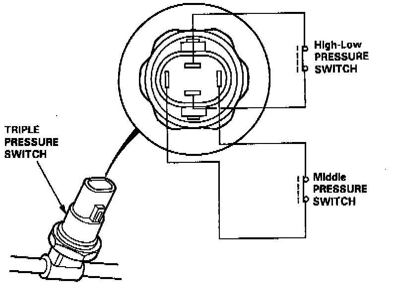
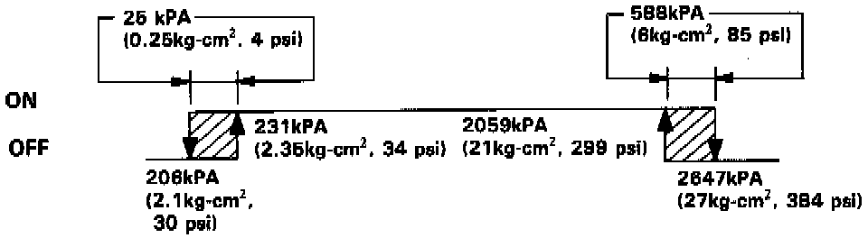
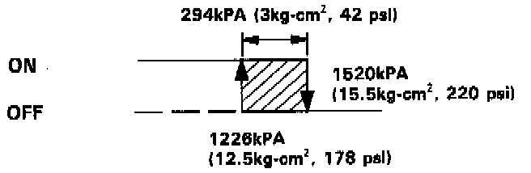

Refrigerant Pressure Sensor / Switch: Description and Operation
Triple Pressure Switch:

TRIPLE PRESSURE SWITCH
The triple pressure switch consists of a High-Low pressure switch and a middle pressure switch.
High-Low Pressure Switch Operation:

- High-Low pressure switch
If the refrigerant pressure becomes too high (due to blockage), or too low (due to leakage), the triple pressure switch sends a signal to the fan control unit to prevent the compressor from operating.
Middle Pressure Switch Operation:

- Middle pressure switch
If the refrigerant pressure goes above or below 1520 kpa (15.5 kg-cm2, 220 psi), the triple pressure switch sends a signal to the fan control unit to change the speed of the condenser fan and radiator fan (High-Low).